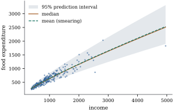

22.5 Interpreting a transformed model
A model fitted on a transformed scale answers
questions on that scale, but readers ask about the
original one: how much will a household with income
Throughout this section
where
22.5.1. Medians and means
Assume Eq. 22.5.1.
(a) Quantiles. If
(b) Means.
(c) Smearing. Let
If moreover
Proof.
- (a)
- (b)
- (c) Put
By part (a), a transformed model is naturally read
through medians:
The script simulates the log-linear model
import numpy as np
def simulate(reps, n_sim, seed):
"""Log-linear model with right-skewed errors e = 0.6 (E - 1), E ~ Exp(1): estimate / true mean."""
rng = np.random.default_rng(seed)
xs = np.linspace(0, 2, n_sim)
Xs = np.column_stack([np.ones(n_sim), xs])
beta, sig = np.array([1.0, 0.5]), 0.6
x0 = np.array([1.0, 1.0])
true_mean = np.exp(x0 @ beta) * np.exp(-sig) / (1 - sig) # E exp(e) = e^(-sig)/(1 - sig)
out = np.empty((reps, 3))
for r in range(reps):
e = sig * (rng.exponential(size=n_sim) - 1)
z = Xs @ beta + e
coef, *_ = np.linalg.lstsq(Xs, z, rcond=None)
res = z - Xs @ coef
s2_sim = res @ res / (n_sim - 2)
naive = np.exp(x0 @ coef)
out[r] = [naive, naive * np.exp(s2_sim / 2), naive * np.mean(np.exp(res))]
return out.mean(axis=0) / true_mean
ratios = simulate(reps=300, n_sim=100, seed=2205)
print("mean of estimate / true mean: naive %.3f lognormal %.3f smearing %.3f" % tuple(ratios))The browser cell uses
Warning. Smearing needs identically
distributed errors on the transformed scale. If their
variance depends on the regressors, so does
22.5.2. Intervals on the original scale
Assume Eq. 22.5.1, and
let
(a) If
(b) If
(c) Let
Proof.
- (a) and (b): since
Part (c) gives the approximate interval
With the log–log fit of Example (Food expenditure on the raw and the log scale),
Figure 22.5.1 shows the data
on the original scale with the fitted median curve, the
smearing estimate of the mean and a
The log-scale residual variance

import numpy as np
import statsmodels.api as sm
from scipy import stats
df = sm.datasets.engel.load_pandas().data
income, food = df["income"].to_numpy(), df["foodexp"].to_numpy()
n = len(food)
X = np.column_stack([np.ones(n), np.log(income)])
fit = sm.OLS(np.log(food), X).fit()
b, s2, resid = fit.params, fit.scale, fit.resid
XtX_inv = np.linalg.inv(X.T @ X)
t = stats.t.ppf(0.975, n - 2)
smear = np.mean(np.exp(resid)) # Duan's smearing factor
lognormal = np.exp(s2 / 2) # the normal-theory factor
print(f"smearing factor {smear:.4f}, lognormal factor {lognormal:.4f}")
for x0 in (500, 2000):
v0 = np.array([1, np.log(x0)])
eta, h0 = v0 @ b, v0 @ XtX_inv @ v0
median = np.exp(eta)
ci_med = np.exp(eta + np.array([-1, 1]) * t * np.sqrt(s2 * h0)) # for the median, exact
pi = np.exp(eta + np.array([-1, 1]) * t * np.sqrt(s2 * (1 + h0))) # for a new household, exact
print(f"income {x0}: median {median:.1f}, CI [{ci_med[0]:.1f}, {ci_med[1]:.1f}];"
f" mean {median * smear:.1f} (smearing), {median * lognormal:.1f} (lognormal);"
f" 95% prediction interval [{pi[0]:.0f}, {pi[1]:.0f}]")22.5.3. Elasticities and marginal effects
In a transformed model a coefficient is not a rate of
change of
Let
In particular the elasticity is the constant
Proof. Differentiate the identity
with respect to
The model fixes the shape of the elasticity
profile before the data have a say. For Engel’s data the
log–log slope
22.5.4. Which scale to report
A transformation chosen for statistical reasons need
not be the reporting scale. The logarithm is often worth
keeping, since its coefficients are ratios and
elasticities (Proposition 22.1.1).
For other powers, report on the original scale: medians
and prediction intervals, which transform exactly, and
means, which need a correction factor and a constant
variance. Compare models fitted on different scales on a
common scale, through the Box–Cox likelihood (Section 22.2) or the accuracy
of predictions of
22.5.5. Exercises
A. Check your understanding
For Engel’s log–log fit
Explain why the prediction interval of Example (Engel’s data on the original scale),
obtained from Theorem 12.3.1,
is longer above the median than below it, and why its
coverage is nevertheless exactly
B. Practice
Under normal errors on the log scale, show that
Solution.
Let
For Engel’s data at income
C. Going deeper
Extend Proposition 22.5.1(c)
to a general strictly increasing
Suppose that on the log scale
Solution. Given